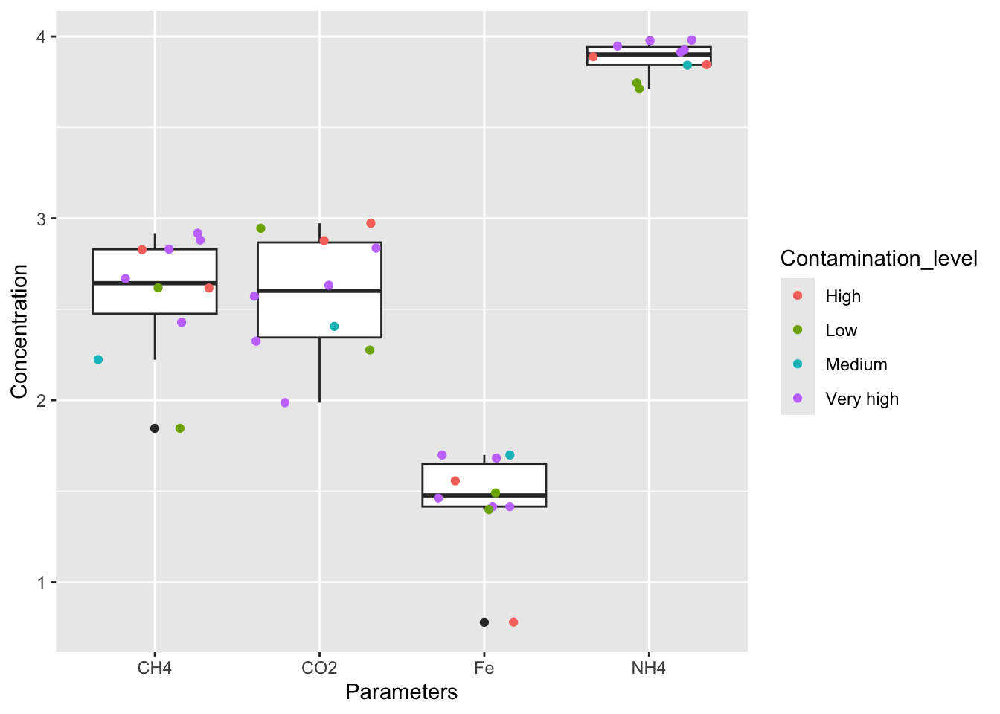
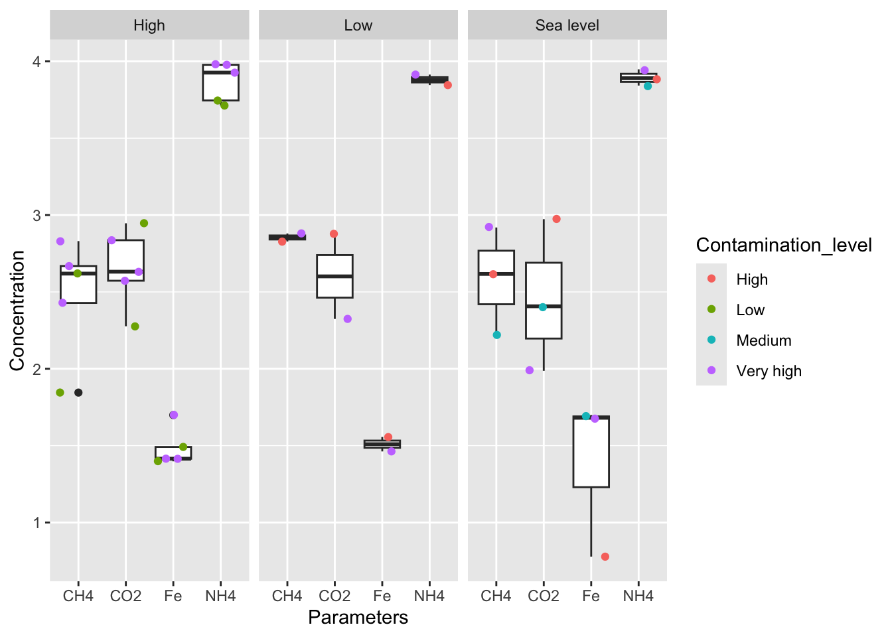
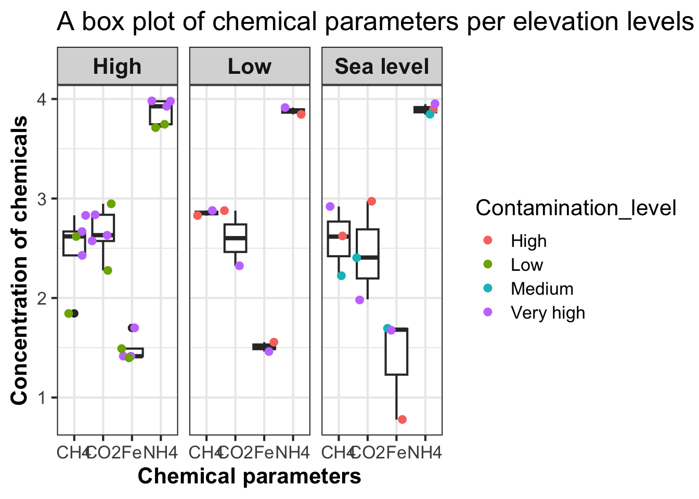

> install.packages("tidyverse")
> library(tidyverse)3 Lab 2: Data Manipulation and Presentation in R
3.1 Learning objectives
Click to expand
By the end of this lab you will be able to:
Demonstrate the ability to import and export variety of data types
Demonstrate the ability to transform and manipulate data using a variety of base and accessory functions
- Know how to manipulate data using functions from the tidyverse family of packages e.g. dplyr and tidyr
Demonstrate the ability to use and nest conditional statements
Understand the concept of iteration and demonstrate the ability to iterate over complex data
Demonstrate the ability to write custom functions in R
Demonstrate the ability to generate plots in R
- Demonstrate mastery of plotting using the ggplot package
4 The Lab
In this lab you will learn how to import, export, manipulate and present data in R. You will also learn how to use loops and conditional statements to control the flow of your script. Lastly you will learn how to write custom (user-defined) functions.
As part of this lab you will use some packages belonging to the Tidyverse package family (the link has more useful information). Tidyverse packages are geared towards data importation, manipulation, and presentation. They all use standardized grammar that makes the code more streamlined and readable. Stringr, which you have already used, is part of the Tidyverse packages.
All Tidyverse packages are packaged as one package. Before you start this lab, use the code below to install and load it.
4.1 Importing and exporting data in R
So far you have been generating data in R, however when you work on real data most likely you will need to import it to R. R is capable of importing multiple file formats, and additional packages can expand its capabilities to import specialized file formats (e.g. raw DNA and RNA sequencing files). During this lab you will import csv and txt files. Make sure to download the CSV and txt files from Brightspace.
read.csv
CSV files (or comma-separated value files) are text files where values are separated by commas. This is a commonly used file format used to store tabulated data. read.csv is a built-in function in BaseR that imports CSV files to R as a dataframe. Note that the readr package which is part of the Tidyverse has a read_csv function which imports CSV files to R. However it imports them as a tibble which is a sort of redesigned dataframe with some quirks so make sure not to confuse them.
> #When calling read.csv, the file arguments specifies the path the the file you are loading
> #/path/to/file.csv
> #eg c:/directory1/directory2/file.csv
> #eg ~/directory1/file.csv
>
> df1 <- read.csv(file ="lab2_files/practice2.csv")
> class(df1)[1] "data.frame"> head(df1,3) X CO2 NH4 Fe CH4
1 site1 428 9489 50 677
2 site2 940 7765 6 414
3 site3 211 8199 29 759Note the column with the X, that’s the column with the row names. If you know that the first column in the file you are loading contains row names you can add row.names = 1 as part of the read.csv function. Note that read.csv imports characters as factors, to avoid it use stringsAsFactors=F. Let’s inspect the class of the X column:
> class(df1$X)[1] "character"Let’s fix that by assigning the column values to the row names. Then, we can remove the first column:
> row.names(df1) <- df1$X
> #Now let's remove the first column
> df1 <- df1[,-1]
> #Another way to do this is
> #df1[1] <- NULL
> #Could use $ as well
> head(df1) CO2 NH4 Fe CH4
site1 428 9489 50 677
site2 940 7765 6 414
site3 211 8199 29 759
site4 255 6954 50 167
site5 374 8444 26 466
site6 686 9559 26 268read.csv can be used to read files from online sources as well; the code snippet below demonstrates how to read a file from my GitHub page.
> df2 <- read.csv(
+ file = "https://raw.githubusercontent.com/idohatam/Biol-3315-files/main/practice.csv",
+ row.names = 1, stringsAsFactors = F)
> head(df2,3) P1 P2 P3 P4
A1 23 100 59 86
A2 35 37 2 86
A3 80 30 25 96read.table
read.csv is a special case of the read.table function (R has several of those). read.table allows you to read tabulated data stored in text files, but separated by any type of spacer.
Here is an example where the spacer is a tab. Note that read.table can be used to read csv files as well and that read.csv can be used to read txt files so long as the sep argument is correct.
> #sep = '\t' means tab delimitation
> df1b <- read.table("lab2_files/practice2.txt", sep = '\t', header = T,
+ row.names = 1, stringsAsFactors = F)
>
> class(df1b)[1] "data.frame"> #are they identical?
> df1 == df1b CO2 NH4 Fe CH4
site1 TRUE TRUE TRUE TRUE
site2 TRUE TRUE TRUE TRUE
site3 TRUE TRUE TRUE TRUE
site4 TRUE TRUE TRUE TRUE
site5 TRUE TRUE TRUE TRUE
site6 TRUE TRUE TRUE TRUE
site7 TRUE TRUE TRUE TRUE
site8 TRUE TRUE TRUE TRUE
site9 TRUE TRUE TRUE TRUE
site10 TRUE TRUE TRUE TRUEA note about funky files and funky R behavior
As bioinformaticians, oftentimes you will be asked to analyze data that you did not create. If the columns contain characters that R recognizes as special characters, it might lead to errors in the delimitation process when importing the file. read.table and all special cases of it have a quote argument that helps circumvent these errors by ignoring specified characters. This blog post has a great example of how to use the quote argument in read.table.
Reading non-tabulated text files
As bioinformaticians you will be required to work with non-tabulated file formats. A great example of this are text files, where information is stored as lines of strings. FASTA format, a standard for handling sequence data (will be covered in labs 3 and 4) is in fact a text file with lines as strings of sequences.
BaseR has some built-in functions to import non-tabulated text files. The snippet below demonstrates how read a text file from the Gutenberg organization. Just like with read.csv, you can use it to read files locally as well.
> #The function file establishes a connection with the file, open="r" denotes a read only connection
> book <- file("https://www.gutenberg.org/files/98/98-0.txt", open="r")
>
> #The function readLines reads the file into memory line by line
> #This is also a useful way to remove non tabulated lines from a file that otherwise contains tabulated data (e.g. header lines)
>
> book.lines <- readLines(book)
>
> #The file is stored as a large atomic vector
> typeof(book.lines)[1] "character"> is.atomic(book.lines)[1] TRUE> #Each line is a character vector with a length of 1
> book.lines[7][1] ""> length(book.lines[7])[1] 1> #We can use the length function to inspect how many lines are in the file
> length(book.lines)[1] 15905Quick R exercise
Load the stringr package if you haven’t yet
Use the str_which function to find all lines with the word title in them (remember to account for case sensitivity)
What is the title of the book you imported to R?
Exporting files
There are many ways to export data from R as files. In many cases you will be required to export tabulated data from R. To do so you can use the write.csv function (yes it is a special case of write.table function).
> #Let's generate a 100X100 dataframe which we will export out of R
>
> #First let's generate the row names vector
> #The paste function will generate a vector of 100 consecutive elements Site1 - Site 100
> #Note that I am not using a loop for that, the vectorization in R saves on a lot of iterations
>
> sites <- paste("Site", seq(1,100, by=1), sep = "")
>
> cols <- paste("species", seq(1,100, by = 1), sep = "")
>
> #Now lets generate the numbers, here I am cheating and using the replicate function
> #It is a function that acts as a for loop, we will see some more of these function when we discuss iterations
> #The replicate function will create a list with 100 elements each is a vector of a 100 random numbers
>
> da <- replicate(100, sample(1:10000,100,replace = T), simplify = F)Now let’s turn it into a dataframe and set the column names:
> #Now lets turn is to a dataframe, Reduce binds all the vectors as columns (again cheating and using a function that acts as a for loop)
> da.df <- as.data.frame(Reduce(f=cbind, da),row.names = sites)
> names(da.df) <- colsNow we are ready to export the dataframe as a csv file:
> #Now we are ready to export the dataframe as a csv file
> write.csv(da.df, file = "practice3.csv", row.names = T)R allows you to export non-tabulated files as well, the following snippet demonstrates how to export non-tabulated data as a txt file. In future labs you will export other file types as well.
> #Let's write the first 12 lines of the book as text file
> #Note that if you were writing into an existing file you could use the argument append = T and R would add lines instead of writing over the file.
>
> write(book.lines[1:12], file = "book.txt", append = F)Quick R exercise
Generate 3 strings and house each of them in a vector
Add the 3 strings as new lines at the end of book.txt
4.2 Manipulating your data
R has some powerful tools allowing you to manipulate and modify data. We have already gone over some of them. For example, you have learned several ways to subset objects, you have learned that almost any data type in R can be coerced to any other using the as.x functions. You have also learned the rbind and cbind can bind vectors to matrices and matrices to larger matrices.
This section of the lab will expand your capabilities of modifying data, and will focus of tools mainly from two Tidyverse packages, dplyr and tidyr. These packages are designed to streamline data manipulation, making data tidier. They share some of the philosophy and framework of SQL, and thus are worth getting to know.
As always, there are some great cheatsheets for data manipulation using Tidyverse packages:
Click to expand
A Simple cheatsheet
A note about tidy data
A guiding principle of tidy data is that every line of tabulated information should have a unique identifier (similar to SQL). In BaseR row names act as a unique identifier for each row, as every row has a unique value. Tidyverse does not view row names as an efficient way to handle unique ID and some tidyverse functions tend to omit the information stored as row names. This is not a big deal, it just requires that you assign the row names to a column.
The code snippet below will introduce you to three tidyverse functions that will allow you copy the row names as a column, I will also compare it to a non-tidyverse approach.
> #Let's use the dataframe da.df as an example dataset
>
> #First the non-tidyverse way, note that I am copying da.df since I am planning to reuse it
> #Using the cbind.data.frame function to column bind the row names and the and da.df to one dataframe
>
> da.df2 <- cbind.data.frame(row.names(da.df),da.df)
>
> #Change the name of the row names to Sites
>
> names(da.df2)[1] <- "Sites"
>
> #Inspect
> da.df2[1:4,1:4] Sites species1 species2 species3
Site1 Site1 3317 4743 8708
Site2 Site2 558 7837 3967
Site3 Site3 4822 7639 7050
Site4 Site4 734 2589 1611Compare that to the tidyverse way:
> #The tidyverse way
> da.df3 <- tibble::rownames_to_column(da.df, "Sites")
>
> da.df3[1:4,1:4] Sites species1 species2 species3
1 Site1 3317 4743 8708
2 Site2 558 7837 3967
3 Site3 4822 7639 7050
4 Site4 734 2589 1611Subsetting columns and rows
The dplyr package makes subsetting columns and rows very simple using the select, filter, and slice functions. The select function allows you to subset columns, while the filter and slice functions allow you to subset rows.
> #The select function allows you to subset by column
> #Subset a range of columns
> da.df3 <- select(da.df2, 45:55)
>
> #Note that select does not remove the row names
> da.df3[1:4,1:4] species44 species45 species46 species47
Site1 3487 9066 7743 7540
Site2 2807 2452 9409 4798
Site3 5611 7132 1703 4722
Site4 6428 484 6216 9793Alternatively it allows you to drop columns.
> #Alternatively it allows you to drop columns
> #Keeping only the first 2 column
> da.df3 <- select(da.df2, -(3:ncol(da.df2)))
>
> da.df3[1:4,1:2] Sites species1
Site1 Site1 3317
Site2 Site2 558
Site3 Site3 4822
Site4 Site4 734select allows you to choose specific columns by name.
> #Select allows to choose specific columns
> da.df3 <- select(da.df2, "species1", "species2","species11")
>
> da.df3[1:4,1:3] species1 species2 species11
Site1 3317 4743 5338
Site2 558 7837 1187
Site3 4822 7639 3100
Site4 734 2589 4570You can also dynamically select columns found in a list or vector.
> #From a list
> species <- c("Sites","species13","species37","species55")
>
> da.df3 <- select(da.df2, which(names(da.df2) %in% species))
>
> da.df3[1:4,1:4] Sites species13 species37 species55
Site1 Site1 5086 9940 5440
Site2 Site2 9260 7624 9238
Site3 Site3 2031 4484 9951
Site4 Site4 3263 1775 1011Lastly select can be used to reorganize a dataframe.
> #Lastly select can be used to reorganize a dataframe
> #Let's look at creating a column from row names again
>
> da.df3 <- da.df
>
> #Creating a column from row names, naming it sites
> da.df3$Sites <- row.names(da.df3)
> #Now sites is the last column
> da.df3[1:4,ncol(da.df3)][1] "Site1" "Site2" "Site3" "Site4"> #, let's move it to be the first
> da.df3 <- select(da.df3, Sites,everything())
> da.df3[1:4,1:4] Sites species1 species2 species3
Site1 Site1 3317 4743 8708
Site2 Site2 558 7837 3967
Site3 Site3 4822 7639 7050
Site4 Site4 734 2589 1611Quick R exercise
Select can be used with some helper functions from the tidyr package such as starts_with
Use select and a helper function to subset da.df for columns ending with 1 (hint, use one of the cheatsheets)
Use the select and the helper function one_of to select columns found in the species vector
Next lets see how to use filter and slice to subset a dataframe by rows
> #filter allows to subset the dataframe based on values of one column
> #Lets filter df based on CO2 concentration
>
> df1 CO2 NH4 Fe CH4
site1 428 9489 50 677
site2 940 7765 6 414
site3 211 8199 29 759
site4 255 6954 50 167
site5 374 8444 26 466
site6 686 9559 26 268
site7 755 7011 36 673
site8 884 5164 25 416
site9 97 8869 48 830
site10 189 5570 31 70> df2 <- filter(df1, CO2 > 300)
>
> #Note that filter discards row name
> df2 CO2 NH4 Fe CH4
site1 428 9489 50 677
site2 940 7765 6 414
site5 374 8444 26 466
site6 686 9559 26 268
site7 755 7011 36 673
site8 884 5164 25 416The slice function allows you to subset a range of rows.
> #slice allows to subset a range of rows
>
> df2 <- slice(df1, 1:4)
>
> #Note that slice discards row names as well
> df2 CO2 NH4 Fe CH4
site1 428 9489 50 677
site2 940 7765 6 414
site3 211 8199 29 759
site4 255 6954 50 167Streamlining data manipulation using %>% operator
So far we have gone through two ways of sequentially running through functions.
Line by line
Chaining functions using brackets
X <- f3(f2(f1(x))) where the order in which the functions run is inside out.
This sort of writing, while concise, makes the code hard to read. The Tidyverse employs a piping operator %>%, colloquially referred to as an “and then” operator.
x %>% f1() is equivalent to f1(x) and x %>% f1(y) is the equivalent of f1(x,y).
> #these lines are equivalent
>
> da.df3 <- select(da.df2, 11:15)
>
> da.df3 <- da.df2 %>% select(11:15)The piping operator can be used to chain functions sequentially, from left to right allowing for more readable code.
> #chaining functions, functions run from left to right on da.df2
> #I am cheating here since you don't know what modify is, though it is pretty self explanatory.
> da.df3 <- da.df2 %>% select(1, 5:13) %>% filter(species11 > 50) %>%
+ modify_if(is.numeric, log1p)Adding and modifying columns
The dplyr package has functions dedicated to modifying and adding columns to tabulated objects. The function mutate from the package dplyr can be used to add columns to dataframes, as well as to modify them.
> #Lets add a column called elevation, with 3 values: high, sea level, low to df
> #Note that again I am copying it since I would like to use it again
> # I am also creating the site column and then moving both to be columns 1 and 2
>
> elevation <- c("High", "Sea level", "Low")
>
> df2 <- df1 %>% mutate(Sites = row.names(df1)) %>%
+ mutate(Elevation = sample(elevation, nrow(df1), replace = T)) %>%
+ select(Sites, Elevation, everything())
>
> df2 Sites Elevation CO2 NH4 Fe CH4
site1 site1 High 428 9489 50 677
site2 site2 Sea level 940 7765 6 414
site3 site3 Low 211 8199 29 759
site4 site4 Sea level 255 6954 50 167
site5 site5 High 374 8444 26 466
site6 site6 High 686 9559 26 268
site7 site7 Low 755 7011 36 673
site8 site8 High 884 5164 25 416
site9 site9 Sea level 97 8869 48 830
site10 site10 High 189 5570 31 70mutate can also be used to modify columns. Let’s log transform the CO2 column.
> #Mutate can also be used to modify columns
> #Lets log transform the CO2 column
> #Again I am copying the dataframe since I plan on using it later
>
> df3 <- df2 %>% mutate(CO2 = log1p(df2$CO2))
>
> df2$CO2 [1] 428 940 211 255 374 686 755 884 97 189> df3$CO2 [1] 6.061457 6.846943 5.356586 5.545177 5.926926 6.532334 6.628041 6.785588
[9] 4.584967 5.247024mutate has a subset of functions that modify all or a subset of columns from a dataframe, negating the need to use a loop.
> #One useful mutate function is mutate_if, it allows to modify a column if a condition is met
> #For example it allows to change all character columns to factors
>
> class(df3$Elevation)[1] "character"> df3 <- df2 %>% mutate_if(is.character, as.factor)
> class(df3$Elevation)[1] "factor"mutate_if allows you to perform mathematical operations only on numeric columns.
> #mutate_if allows to perform mathematical operations only on numeric columns
> #e.g. log transformation and then multiply by 2
> #Note that ~ is used to escape the mathematical operator and the . is used to tell R to run the operation on the dataframe
>
> df3 <- df2 %>% mutate_if(is.numeric, log1p) %>%
+ mutate_if(is.numeric, ~.*2)Transforming dataframes
The dplyr and tidyr packages have many functions that allow you to transform and reshape dataframes. Much like BaseR, dplyr’s bind_rows and bind_cols pastes two dataframes based on columns or rows. However, dplyr has some functions that allow for more sophisticated joining of two dataframes.
> #Let's use df2 and da.df2 as example, one contains information about species and one contains information about chemical attributes. However, df only has information about 10 sites, that's 90 less than in da.df2. How can they be joined?
>
> #The function left_join takes two dataframes as arguments and joins matching values from the right to the left based on a joint column
>
> #In this example I will select the first 5 columns of da.df2
> #(easier to see the results of the join) and join df to it based on the site column which is shared between the two.
>
> da.df3 <- da.df2 %>% select(1:5)%>%
+ mutate(Sites = str_to_lower(Sites)) %>%
+ left_join(df2, by="Sites")
>
> #Note the NAs in rows that are not matched
> da.df3 [10:12,] Sites species1 species2 species3 species4 Elevation CO2 NH4 Fe CH4
10 site10 98 4303 8688 9760 High 189 5570 31 70
11 site11 8523 2012 4743 5274 <NA> NA NA NA NA
12 site12 8174 9613 8355 9835 <NA> NA NA NA NAUsing inner_join will keep only matching rows.
> #inner_join will keep only matching rows
>
> da.df3 <- da.df2 %>% select(1:5)%>%
+ mutate(Sites = str_to_lower(Sites)) %>%
+ inner_join(df2, by="Sites")
>
> nrow(da.df3)[1] 10Quick R exercise
Try running left_join with df as the left argument, what was the result?
Try using right_join and full_join (you can use the dplyr cheatsheet for help)
So far the data used in this lab was stored in a wide format table, however, as you will see later in lab 2 there are advantages to using long format tables. Long tables are ones where the columns are converted into keys and the content of the column is the value paired to each key.
The gather function from tidyr package converts wide tables to long tables.
> #Here using the gather function to convert df2 to wide table the column names are the key, the values they store are the values.
> #Note that I am exempting Site and Elevation from it.
>
> df3 <- df2 %>% gather(key = "Parameters", value = "Concentration", 3:ncol(df2))
>
> df3 Sites Elevation Parameters Concentration
1 site1 High CO2 428
2 site2 Sea level CO2 940
3 site3 Low CO2 211
4 site4 Sea level CO2 255
5 site5 High CO2 374
6 site6 High CO2 686
7 site7 Low CO2 755
8 site8 High CO2 884
9 site9 Sea level CO2 97
10 site10 High CO2 189
11 site1 High NH4 9489
12 site2 Sea level NH4 7765
13 site3 Low NH4 8199
14 site4 Sea level NH4 6954
15 site5 High NH4 8444
16 site6 High NH4 9559
17 site7 Low NH4 7011
18 site8 High NH4 5164
19 site9 Sea level NH4 8869
20 site10 High NH4 5570
21 site1 High Fe 50
22 site2 Sea level Fe 6
23 site3 Low Fe 29
24 site4 Sea level Fe 50
25 site5 High Fe 26
26 site6 High Fe 26
27 site7 Low Fe 36
28 site8 High Fe 25
29 site9 Sea level Fe 48
30 site10 High Fe 31
31 site1 High CH4 677
32 site2 Sea level CH4 414
33 site3 Low CH4 759
34 site4 Sea level CH4 167
35 site5 High CH4 466
36 site6 High CH4 268
37 site7 Low CH4 673
38 site8 High CH4 416
39 site9 Sea level CH4 830
40 site10 High CH4 70The function spread converts long tables to wide tables.
> #The function spread converts long tables to wide tables
> df3 <- df3 %>% spread(Parameters,Concentration)
>
> head(df3) Sites Elevation CH4 CO2 Fe NH4
1 site1 High 677 428 50 9489
2 site10 High 70 189 31 5570
3 site2 Sea level 414 940 6 7765
4 site3 Low 759 211 29 8199
5 site4 Sea level 167 255 50 6954
6 site5 High 466 374 26 8444dplyr can group data based on category and summarize it based on grouping. This can be useful for example to calculate the average genetic diversity across geographical areas.
> #group_by is used to group the table by elevation, summarise is used to calculate the mean concentration of each chemical, per elevation. Because the Sites column is not numeric I used summarize_if.
>
> df3 <- df2 %>% group_by(Elevation) %>% summarise_if(is.numeric, mean)
>
> df3# A tibble: 3 × 5
Elevation CO2 NH4 Fe CH4
<chr> <dbl> <dbl> <dbl> <dbl>
1 High 512. 7645. 31.6 379.
2 Low 483 7605 32.5 716
3 Sea level 431. 7863. 34.7 470.Quick R exercise
the summarize function can summarize more than just mean, and can take more than one argument to summarize by.
- Use list() within summarize_if to calculate both the mean, SD, and maximum value for each of the chemicals in df2. Assign in to df3
4.3 Conditional statements and iterations
Sometimes it is necessary to tell R which code to run on different parts of the data, or how many times to run each line of code. Conditional statements such as if else, and loops are there to do just that.
Conditional statements
Conditional statements are used to determine which code will handle what part of the data. You have already used a conditional statement, even if you didn’t notice. mutate_if is a function using a conditional statement modifying a column if a condition is met (e.g. is.numeric).
The basic conditional statement is if, it asks if a condition is met (e.g. if(x>8) = TRUE). Once the condition is met, something happens. if can be paired with an else statement to determine what to do if the condition is not met.
> # Here is an example of an if else statement note the curly brackets
> x <- 8
>
> if (x == 8) {
+ print("x = 8")
+ } else {
+ print("x != 8")
+ }[1] "x = 8"If else statements can also be chained sequentially.
> #If else statements can be chained
> if(x>8) {
+ print("x>8")
+ } else {
+ if (x == 8) {
+ print("x=8")
+ } else {
+ print("x<8")
+ }
+ }[1] "x=8"if else statements only work with scalars, i.e. only evaluate objects with one element. In order to evaluate a vector, the function ifelse should be used. ifelse takes 3 arguments, test (e.g. x>8), yes (what to do in case test is true), no (what to do in case test is false).
> #Creating a vector
> x <- sample(1:1000, 10, replace = T)
>
> #ifelse function, if x > 500 paste something else paste something else to y
> y <- ifelse(x > 500, paste("x>500"), paste("x < = 500"))
>
> #dplyr has a modified ifelse function, it allows to handle missing values
> z <- if_else(x > 500, paste("x>500"), paste("x < = 500"))
>
> y [1] "x>500" "x>500" "x>500" "x < = 500" "x>500" "x < = 500"
[7] "x>500" "x>500" "x < = 500" "x < = 500"> z [1] "x>500" "x>500" "x>500" "x < = 500" "x>500" "x < = 500"
[7] "x>500" "x>500" "x < = 500" "x < = 500"Let’s do this on a dataframe. If elevation is high temp is -7 else temp is 10.
> #Let's do this on a dataframe
> #If elevation is high temp is -7 else temp is 10
>
> df2 <- df2 %>% mutate(Temp = if_else(Elevation == "High", -7, 10))ifelse can be chained, either as sequential function or within the first function. NA is a filler in case one condition is not met.
> #ifelse can be chained, either as sequential function or within the first function.
> #NA is a filler in case one condition is not met
> df2 <- df2 %>% mutate(Temp = if_else(Elevation == "High", -7, NA)) %>%
+ #If test is false keep current value
+ mutate(Temp = if_else(Elevation == "Sea level", 15, Temp)) %>%
+ mutate(Temp = if_else(Elevation == "Low", 25, Temp))
>
> df2 Sites Elevation CO2 NH4 Fe CH4 Temp
site1 site1 High 428 9489 50 677 -7
site2 site2 Sea level 940 7765 6 414 15
site3 site3 Low 211 8199 29 759 25
site4 site4 Sea level 255 6954 50 167 15
site5 site5 High 374 8444 26 466 -7
site6 site6 High 686 9559 26 268 -7
site7 site7 Low 755 7011 36 673 25
site8 site8 High 884 5164 25 416 -7
site9 site9 Sea level 97 8869 48 830 15
site10 site10 High 189 5570 31 70 -7Alternatively, you can nest if_else statements. Note that the second if_else is chained in the false argument.
> #alternatively
> df2 <- df2 %>% select(-Temp)
>
> #Note in second if_else, if_else is chained in the false argument.
> #This will not work with the first one since mutate needs to create the Temp column first
> df2 <- df2 %>% mutate(Temp = if_else(Elevation == "High", -7, NA)) %>%
+ mutate(Temp = if_else(Elevation == "Sea level", 15,
+ if_else(Elevation == "Low", 25, Temp)))
>
> df2 Sites Elevation CO2 NH4 Fe CH4 Temp
site1 site1 High 428 9489 50 677 -7
site2 site2 Sea level 940 7765 6 414 15
site3 site3 Low 211 8199 29 759 25
site4 site4 Sea level 255 6954 50 167 15
site5 site5 High 374 8444 26 466 -7
site6 site6 High 686 9559 26 268 -7
site7 site7 Low 755 7011 36 673 25
site8 site8 High 884 5164 25 416 -7
site9 site9 Sea level 97 8869 48 830 15
site10 site10 High 189 5570 31 70 -7Chaining multiple ifelse statements can make the code very unreadable and clumsy. The case_when function from the dplyr package acts as a multiple ifelse statements and accepts multiple test arguments.
> #Let's create a new column called contamination_level and assign values based on NH4 concentrations
>
>
> df2 <- df2 %>% mutate(Contamination_level = case_when( NH4 > 8000 ~"Very high",
+ NH4 > 7000 ~"High",
+ NH4 > 6500 ~"Medium",
+ NH4 < 6500 ~"Low"))
> df2 Sites Elevation CO2 NH4 Fe CH4 Temp Contamination_level
site1 site1 High 428 9489 50 677 -7 Very high
site2 site2 Sea level 940 7765 6 414 15 High
site3 site3 Low 211 8199 29 759 25 Very high
site4 site4 Sea level 255 6954 50 167 15 Medium
site5 site5 High 374 8444 26 466 -7 Very high
site6 site6 High 686 9559 26 268 -7 Very high
site7 site7 Low 755 7011 36 673 25 High
site8 site8 High 884 5164 25 416 -7 Low
site9 site9 Sea level 97 8869 48 830 15 Very high
site10 site10 High 189 5570 31 70 -7 LowQuick R exercise
- Group df2 by contamination level and summarize average chemical concentration per contamination level.
Iterations
As mentioned, R is pretty good at vectorized functions which negate the need for iterations. For example ifelse negates the need to use a loop to iterate over each position of the inspected vector. Furthermore, we have worked with functions such as summarize that iterate over an entire dataframe or replicate which can be used to generate a list of multiple elements.
These functions were made because loops are considered memory inefficient and slow, while vectorized functions and specialized iteration functions are compiled and efficient.
However, sometimes there is no escaping the loop. The only loop we will go over in this lab is the for loop, while there are other loops in R in my experience they are rarely used.
The for loop has the following basic structure for(element in vector) { do something}. Normally a counting variable is used to subset elements while iterating over a vector. If a counting variable is used than the vector is a range of numbers.
Here is an example of a basic for loop.
> #Let's write a loop that picks lotomax numbers for you
>
> #First assign a counting variable
> i=1
>
> #Generating random numbers
> x <- sample(1:50, 8, replace = F)
>
> #Constructing the loop
> #seq_along() generates a vector of 1:length of x
> #The reason I don't use 1:length(x) is that if the length of x is 0 the loop would still run, seq_along prevents this
>
> for(i in seq_along(x)){
+ print(paste("The",i, "number is:", x[i], sep = " "))
+ }[1] "The 1 number is: 50"
[1] "The 2 number is: 13"
[1] "The 3 number is: 42"
[1] "The 4 number is: 19"
[1] "The 5 number is: 28"
[1] "The 6 number is: 4"
[1] "The 7 number is: 44"
[1] "The 8 number is: 10"Let’s combine a conditional statement with the for loop and make a fancier number picker.
> #Let's combine a conditional statement with the for loop and make a fancier number picker
> for(i in seq_along(x)){
+ if(1<= i & i <8){
+ print(paste("The",i, "number is:", x[i], sep = " "))
+ } else{
+ print(paste("The bonus number is:", x[i], sep = " "))
+ }
+ }[1] "The 1 number is: 50"
[1] "The 2 number is: 13"
[1] "The 3 number is: 42"
[1] "The 4 number is: 19"
[1] "The 5 number is: 28"
[1] "The 6 number is: 4"
[1] "The 7 number is: 44"
[1] "The bonus number is: 10"Quick R exercise
What would happen if set.seed(123) was the first line of the loop?
The previous snippet was a pretty simple use of a for loop, now lets look at a practical way of implement it. When working as a bioinformatician you will most likely have to load and manipulate data from multiple files. In the following example I will use read.csv to import all csv files in a certain folder and place them in a list. Note that I am generating the list outside the loop, when you index an existing vector rather than add new elements to it for loops run faster.
> #Create a vector with a list of all csv files in my folder.
> #You can use the argument path = to change folder.
> #recursive = F ignores subfolders
> files <- dir(pattern = ".csv", recursive = F)
>
> lsfile <- vector(mode = "list", length = length(files))
>
> i = 1
>
> for (i in seq_along(files)) {
+ lsfile[[i]] <- read.csv(file = files[i],row.names = 1, stringsAsFactors = F)
+ names(lsfile)[[i]] <- paste(files[i])
+ } 4.4 Functions
If you remember, R lets users write customized functions.
As a bioinformatician you would probably be required to share scripts with other people. Sharing customized functions instead of a messy script increases the reproducibility of your script because all the receiving party has to do is input arguments instead of tinkering with endless lines of code. Similarly, when you find yourself running the same scripts over and over it is advantageous to wrap them up as customized functions. This clears up your script, and allows you to chain functions and automate your analysis. This is what’s known as a pipeline.
As a student it also pays to know how write functions in R. If you find yourself conducting the same analysis in different labs (say chemistry and physics), write a pipeline that generates the graphs and tables you need.
Constructing a function
The function structure is function(arguments){operations done on functions}. The arguments require input from the user, but they can have default values e.g. function(arg1=5, arg2 = NA, arg3) { do something}. In this example arg1 and arg2 have default values. They can be changed by the user, but if there is no input from the user the function will use the default value. If the function is intended to return a value
Lets look at two functions as an example, the first one is very simple the second a bit more complex.
> #How to construct a function
>
> #Assign a function to a variable, set the arguments
> #Decide what the function does with the arguments
>
> print_x <- function(x){
+ print("All this function does is print x")
+ print(x)
+ }Let’s turn the for loop lotto number generator into a function.
> # Let's turn the for loop lotto number generator to a functions
>
> Lottery_nums <- function(npicks){
+ #Need round numbers
+ as.integer(npicks)
+ #If 8 picks lotomax else lotto 649
+ if(npicks == 8){
+ print("Here are your lotomax numbers:")
+ i=1
+ nums <- sample(1:50, npicks, replace = F)
+ for (i in seq_along(nums) ){
+ if (i >= 1 & i <= npicks){
+ print(paste("The",i, "number is:", nums[i], sep = " "))
+ } else {print(paste("The bonus number is:", nums[i], sep = " "))
+ }
+ }
+ } else {
+ if( npicks == 7){
+ print("Here are your lotto649 numbers")
+
+ i=1
+ nums <- sample(1:49, npicks, replace = F)
+ for(i in seq_along(nums)){
+ if(i >=1 & i <= npicks){
+ print(paste("The",i, "number is:", nums[i], sep = " "))
+ } else {print(paste("The bonus number is:", nums[i], sep = " "))
+ }
+ }
+
+ } else{
+ print("npicks has to be either 7 or 8")
+
+ }
+
+ }
+ #Print disclaimer
+ print("This number picker does not increase the chances of winning nor does it encourage participating in lottery games")
+
+ }
>
> Lottery_nums(7)[1] "Here are your lotto649 numbers"
[1] "The 1 number is: 26"
[1] "The 2 number is: 37"
[1] "The 3 number is: 44"
[1] "The 4 number is: 27"
[1] "The 5 number is: 30"
[1] "The 6 number is: 5"
[1] "The 7 number is: 48"
[1] "This number picker does not increase the chances of winning nor does it encourage participating in lottery games"Now that we have played around with some useless functions, lets write a practical function. As I mentioned, when you work as a bioinformatician you would be required to perform the same task multiple times on multiple files and functions are great to automate that in a reproducible manner.
In this example we will write a function that imports csv files, log transforms them and store them in a list. This is a very straight forward function, and its capabilities can be expanded to perform other tasks.
> #Note that I am giving each argument a default value
>
> imp.data <- function(Pattern= ".csv", Path = getwd(), Recursive = FALSE){
+
+ files <- dir(path = Path, recursive = Recursive, pattern = Pattern)
+ i = 1
+ f_list <- vector(mode = "list", length = length(files))
+
+ for (i in seq_along(files)) {
+ f_list[[i]] <- log10(read.csv(file = files[i], row.names = 1, stringsAsFactors = F) )
+
+ }
+ names(f_list) <- files
+
+ #Note return
+ return(f_list)
+
+ }
Note
A note on the function environment
The function environment is distinct from the global environment, therefore if there is an interest in keeping some of the intermediate variables created by the function they need to be exported using the <<- operator. The <<- operator is variable assignment operator similar to <- only it exports variables to the global environment.
4.5 Plotting your data
R has a basic function to graph data, this is done with the plot function. Here is an example of a scatter plot using the plot function.
> plot(x=df2$NH4,y=df2$CO2, xlab = "NH4", ylab = "CO2", main = "A scatter plot")
As you can see the resulting graph is…OK. Luckily the tidyverse has a package that makes plotting graphs in R a whole lot better.
Plotting data with the ggplot2 package
The ggplot2 is a part of the Tidyverse packages. Its strength is that it allows you to build graphs layer by layer based on the grammar of graphics.
All plots generated by ggplot2 require the same three components:
- A data set
- A list of coordinates
- geoms - a set of marks that determines the geometry of the plot (e.g. box-plot, scatter plot)
As always ggplot2 has a great cheatsheet.
Basic ggplot2 plot
The plotting function in the ggplot2 package is ggplot, every plot starts with it. In it you specify the data set the plot will use as well as the x and y coordinates. On top of the basic information you add geoms, i.e. what graph element to add. Elements of the graphs are added using the + sign.
Here is an example of a basic box plot. We’ll break down the components. First, we need to prepare the data. ggplot works best with long tables, so let’s convert df2 and log transform so that the differences in values between chemicals will not be huge.
> #ggplot works best with long tables, lets first convert df2 and log transform so that the differences in values between chemicals will not be huge
>
> df3l <- df2 %>% gather(key = Parameters, value = Concentration, 3:6) %>%
+ mutate(Concentration = log10(Concentration))Now we construct the basic box plot.
> #Lets generate the box plot.
> #First start with ggplot and specify which data to use.
> #The axis are specified under the aes argument.
> plot1 <- ggplot(data = df3l, aes(x=Parameters, y=Concentration))+
+ geom_boxplot()
>
> plot1
This is a nice plot, but it is possible to add more information to it. For example overlay each observation (i.e. observation from each site) on the box plot using the geom_jitter function.
> #Let's overlay each observation on top of the box plot, this will allow you to see where the
> #observation fall, and how many observations are in each category.
> #On top of it, we will color each observation by the level of contamination in the site
> #from which it came
>
> plot2 <- ggplot(data = df3l, aes(x=Parameters, y=Concentration))+
+ geom_boxplot()+
+ geom_jitter(aes(color = Contamination_level))
>
> plot2
That is a nice graph, now lets see how to split a graph to panels by category (e.g. elevation).
> #Facet_wrap allows you to split a graph into facets
> plot3 <- ggplot(data = df3l, aes(x=Parameters, y=Concentration))+
+ geom_boxplot()+
+ geom_jitter(aes(color = Contamination_level))+
+ facet_wrap(~Elevation)
>
> plot3
Lastly, let’s take care of the cosmetics. ggplot has a set of built-in themes, the default is classic view. However it’s possible to change them using theme_x, and further customize them using the theme function. The plot and axis title can also be modified.
> # here I used theme_bw to switch to a black and white theme the base size argument changes font size
> #I then used the theme function to further customize the plot. Strip.text is the title of each facet and axis.title is the title of the axis
> #Basically every aspect of the graph can be modified using theme or other functions
>
> plot4 <- ggplot(data = df3l, aes(x=Parameters, y=Concentration))+
+ geom_boxplot()+
+ geom_jitter(size=2,aes(color=Contamination_level))+
+ facet_wrap(~Elevation)+
+ theme_bw(base_size = 16)+
+ theme(strip.text = element_text(size = 16, face = "bold"),
+ axis.title = element_text(face = "bold"))+
+ xlab("Chemical parameters")+
+ ylab("Concentration of chemicals")+
+ ggtitle("A box plot of chemical parameters per elevation levels")
>
> plot4
Exporting plots
ggplot2 allows you to export plots using the ggsave function
> ggsave(plot = plot4, filename = "a_plot.pdf", units = "in",
+ width = 11.69, height = 8.27)5 Summary exercise:
Start a script file in RStudio, name it 3315_lab2_yourinitials.R You will submit this script and output file if applicable to D2l submission folder.
1. Load the mtcars data-set by using data(mtcars).
2. What class is mtcars? Show your code.
3. Once loaded assign it to the variable car_data, turn the row names into a column (name it Car_model), make sure it is the first column. Do this all in one line of code using the %>% operator and Tidyverse functions. Perform all following tasks on this variable.
4. The column am represents the car’s transmission, 0=Automatic and 1 = Manual write a conditional statement that converts 0 and 1 to Automatic and Manual respectively. Do it within a mutate function. Move am to be the 2nd column of the dataframe. Do it in a single line of code.
5. Remove the columns vs, gear and carb from car_data using a Tidyverse function.
6. Use ggplot to plot a box plot of mpg, with cyl as the grouping category (if you’re getting an error think about what types of values are categorical values). Add jitter to the plot, make sure the size of the dots is 2. Make sure that the x axis title is Number of cylinders and the y axis title is Miles per gallon. Brownie points for any other cosmetic modification of the plot.
7. Export the plot as pdf using a ggplot function, attach the file to your submission.
8. Write a for loop that generates three dataframes, the dataframes need to have 2 numerical columns and 1 character column and 100 rows. The loop should store each dataframe as an element of a list and save each dataframe as a csv file. The names should be dataframe1.csv - dataframe3.csv. You can use the paste function with the loop counting variable to make sure the names are not hard coded. Hint, make the list before you loop.
9. Write a function that reads all csv files in a folder, log1p transforms all the numeric columns and stores the data as an element of a list. Hint, make the list before you loop and make sure to return the list as the final step of the function.